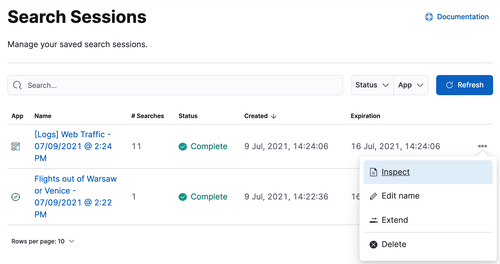

Run a search session in the background
editRun a search session in the background
editSometimes you might need to search through large amounts of data, no matter how long the search takes. Consider a threat hunting scenario, where you need to search through years of data. You can save a long-running search, so Kibana processes your request in the background, and you can continue your work.
Save your search session from Discover or Dashboard, and when your session is complete, view and manage it in Stack Management. Search sessions are enabled by default.
Requirements
edit- To save a session, you must have permissions for Discover and Dashboard, and the search sessions subfeature.
- To view and restore a saved session, you must have access to Stack Management.
Example: Save a search session
editYou’re trying to understand a trend you see on a dashboard. You need to look at several years of data, currently in cold storage, but you don’t have time to wait. You want Kibana to continue working in the background, so tomorrow you can open your browser and pick up where you left off.
-
Load your dashboard.
Your search session begins automatically. The icon after the dashboard title displays the current state of the search session. A clock icon indicates the search session is in progress. A checkmark indicates that the search session is complete.
-
To continue a search in the background, click the clock icon, and then click Save session.

Once you save a search session, you can start a new search, navigate to a different application, or close the browser.
-
To view your saved searches, open the main menu, and then click Stack Management > Search Sessions. For a saved or completed session, you can also open this view from the search sessions popup.
 -
Use the edit menu in Search Sessions to:
- Inspect the queries and filters that makeup the session.
- Edit the name of a session.
- Extend the expiration of a completed session.
- Delete a session.
-
To restore a search session, click its name in the Search Sessions view.
You’re returned to the place from where you started the search session. The data is the same, but behaves differently:
- Relative dates are converted to absolute dates.
- Panning and zooming is disabled for maps.
- Changing a filter, query, or drilldown starts a new search session, which can be slow.
Limitations
editSome visualization features do not fully support background search sessions. When you restore a dashboard, panels with unsupported features won’t load immediately, but instead send out additional data requests, which can take a while to complete. The Your search session is still running warning appears. You can either wait for these additional requests to complete or come back to the dashboard later when all data requests have finished.
A panel on a dashboard can behave like this if one of the following features is used:
Lens
- A top values dimension with an enabled Group other values as "Other" setting. This is configurable in the Advanced section of the dimension.
- An intervals dimension.
Aggregation-based visualizations
- A terms aggregation with an enabled Group other values in separate bucket setting.
- A histogram aggregation.
Maps
- Layers using joins, blended layers, or tracks layers.